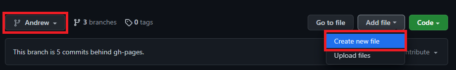
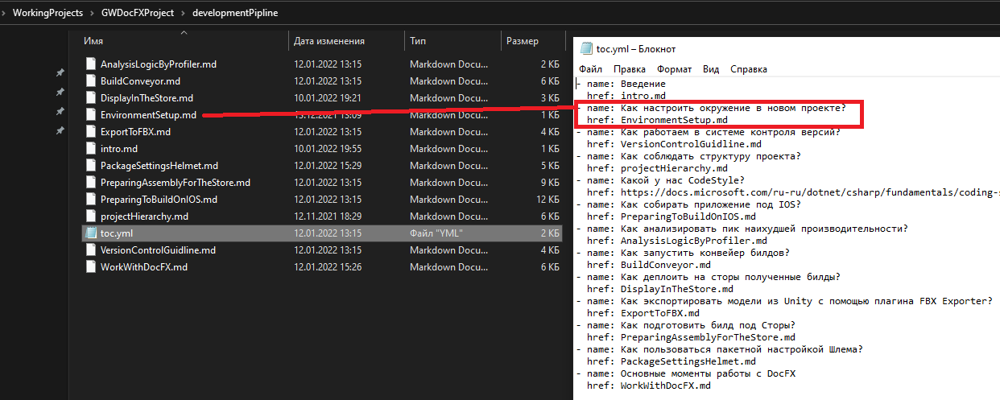
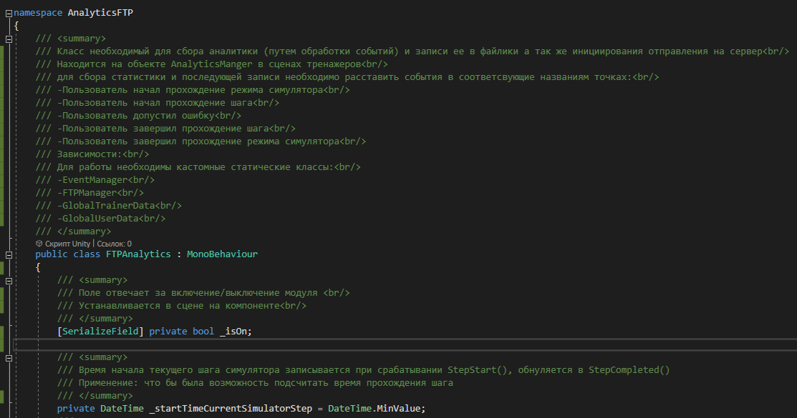
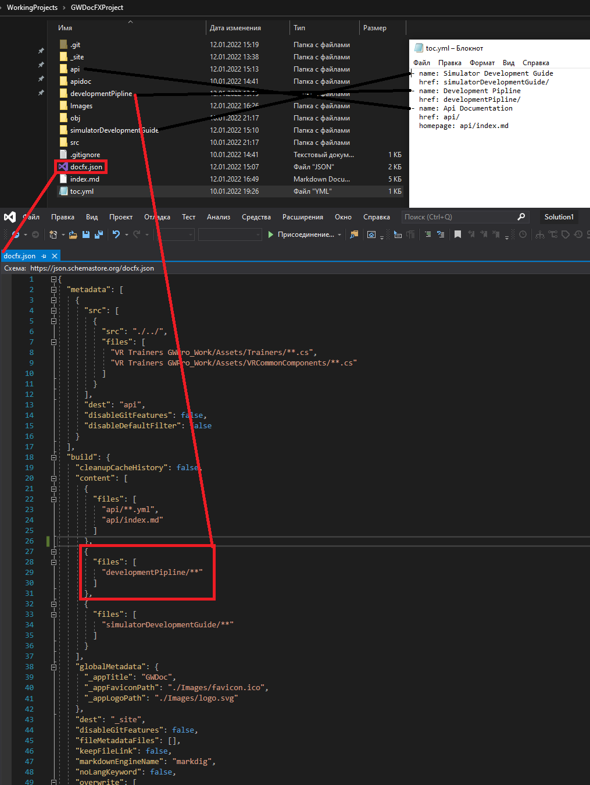
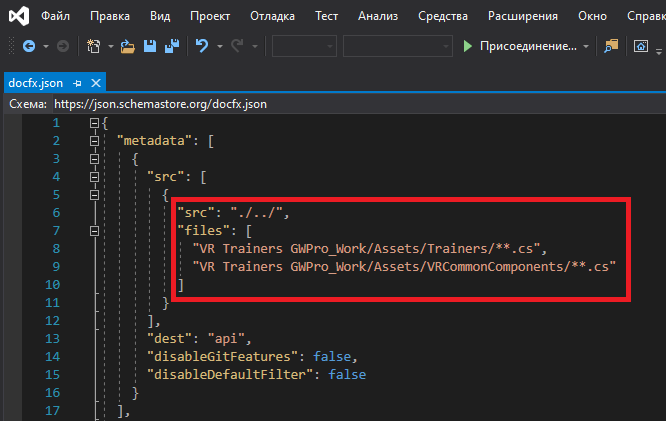

Правила ведения документации
Наша документация ведется с помощью генератора статической документации DocFX Оффициальный сайт
Ответсвенности
Существует два уровня ответсвенности:
- программисты
- менеджер ответсвенный за документацию
Ответсвенности программистов:
- добавляют новые статьи в существующих категориях проекта документации
- для автоматизированного документирования API при создании скриптов во время работы обязательно описывают блок ///summary к каждому полю и методу и
после перехода на новую строку в комментариях для красоты оформления в API - посылают PullRequest
- делают запросы и предложения по созданию новых категорий в документации к менеджеру.
Ответсвенности менеджера по документации:
- принимает PullRequest от программистов
- создает новые категории в документациях по запросам,
- обновляет API скриптов в документации из последнего коммита в ветке Development
- билдит сайт документации с необходимыми настройками
- размещает сайт с документацией
Пайплайн обновления текущей документации выглядит так:
Программисты:
В проект документации (не путать с готовым статическим сайтом документации) Проект документации
- вносим новые статьи
- создаем PullRequest
Менеджер ответсвенный за документацию:
В проект документации (не путать с готовым статическим сайтом документации) Проект документации
- принимает PullRequest
- определяет места подгрузки API, если необходимо его обновить
- создает META файлы для индексации статей и API
- билдит статический сайт документации В проекте готового статического сайта Проект статического сайта
- добавляем все изменения(путем добавления ранее собраного сайта)
Как вносить новые статьи (для программиста)
Стьти можно создать только в определнных категориях на данный момент есть
- DevelopmentPipline: Здесь описаны используемые инструменты и особенности разработки проекта в нашей команде,
- SimulatorDevelopmentGuide: Здесь собраны статьи с правилами геймдизайна по разработке тренажеров,
- InternalAssets: Здесь собраны статьи внутренних ассетов, от старой документации, разработанных нашими программистами.
Категория API создается автоматически при билде менеджером ответсвенным за документацию из последней версии Development ветки проекта.
- Каждый пользователь работает в своей одноименной ветке в проекте документации. Проект документации
- Для любых изменений или добавлений статей создается PullRequest(из своей ветки в мастер)
- Каждый PR просматривается, обсуждается в коментариях к нему и добавляется модератором документации
- При создании новой страницы добавляем файл формата .md ❗ т.к по дефолту гит создает файл без формата ❗ в репозиторий в своей ветке прямо на GitHub

Если нужно добавить файл в папку, то перед ним через слеш пишем название файла который нужно создать
Пишем статью в созданом файлике применяя разметку MarkDown Ссылка на шпаргалку по разметке Markdown
❗ Обязательно указываем ссылку на статью и ее название в файлике toc.yml соответсвующего раздела которые разбиты по одноименным папкам 
По окончании оформления делаем PullRequest из своей ветки в ветку "gh-pages"
Стиль оформления скриптов:
- У каждого поля или метода стараемся прописывать блок ///summary
- Разделяем новую строку комментария тегом
для лучшей читаемости в документации - Описание класса должно содержать
- если это MonoBehaviour то на каких объектах он висит в сцене
- если внутри используются события для EventManagerа то в каких местах они должны вызыватся (EventTrigger с этим событием происходить)
- в подпункте зависимости должны находится все статические классы которые вызываются далее по коду так как не статические и так видно в объявлениях одноименных полей или в Start, Awake а вот статические трудно угадать
- Описание метода должно содержать
- если он висит на объектах подобных кнопкам (если нужно переносить на сцене Drag and Drop то нужно указать куда должны быть перенесены) иначе в последствии по рошествии времени останется лишь гадать где это все весело
- параметры
- возвращаемые значения
- Описание поля должно содержать
- зачем нужно это поле (обоснование каждого поля должно спровоцировать программиста на как можно меньшее их использовании к примеру в некоторых случаях можно использовать локальную переменную что поможет сократить ресурсы GC)

Стиль оформления статей:
- Для оформления названия страниц следует использовать стиль H1 (в MD эквивалент #) и Bold (**)
- Оформление названия каждой следующей (вложеной) главы следует уменьшать на один пункт заголовка H2 (в MD ##) и.т.д
- Все используемые картинки кидаем в папку Images и именуем их по названию файла статьи и порядковому номеру картинки (для порядка)
Как добавлять новые категории (для менеджера ответсвенного за документацию)
При необходимости добавления новых категорий необходимо в корне проекта поправить файлик toc.yml обозначив в нем название категории и ссылку на нее добавить в настройки билда docfx.json созданные категории 
Порядок сборки сайта документации (для менеджера ответсвенного за документацию)
При необходимости актуализировать сайт с документацией (интервал обновления определяется Проект менеджером)
Порядок действий:
- Проверяем наличие PullRequest если есть те которые готовы к принятию, принимаем.
- Проверяем путь (если нужно изменяем) к скриптам проекта в файлике docfx.json. Мы должны собирать все скрипты из категории и их подкатегорий папок Trainers и VRCommonComponents. Для этого необходимо скачать себе актуальный репозиторий проекта  параметр src - позволяет изменять каталог на диске относительно текущего положения корня проекта документации
- Запускаем сборку метаданных проекта для индексации с помощью команды CMD docfx metadata, команда должна быть вызвана из корня проекта
- После успешной сборки метаданных запускаем билд сайта с помощью команды CMD docfx docfx.json, команда должна быть вызвана из корня проекта
- После успешного билда можно проверить работу сайта на локальном сервере с помощью команды CMD docfx serve _site
- Проверяем работоспособность сайта командой CMD stop останавливаем работу локального сервера
- Заливаем полученный сайт на GitHub в Проект статического сайта
- Ожидаем его Deployment время деплоя можно уточнить во вкладке Actions
Общая информация по используемым технологиям в документации:
Какие действия были произведены заранее и не требуют повторения, нужны лишь при критичной ситуации, когда предется начать проект заново:
- создан проект на Github и включена функция Pages для проекта сайта
- в проект документации в файле docfx добавлены настройки по отображению всех полей и методов и приватных и публичных по средствам параметра: «disableDefaultFilter» : true
- в проект документации в файле docfx добавлены настройки по индексированию статей по средствам параметра: "postProcessors": [ "ExtractSearchIndex" ]
- в проект документации в файле docfx добавлены элементы брендирования лого GW, ico и Title GWDoc по средсвам параметров:
"globalMetadata": {
"_appTitle": "GWDoc",
"_appFaviconPath": "./Images/favicon.ico",
"_appLogoPath": "./Images/logo.svg"
Для форматирования документации используется Markdown (далее MD) — облегчённый язык разметки Ссылка на документацию MarkDown